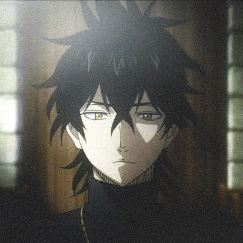
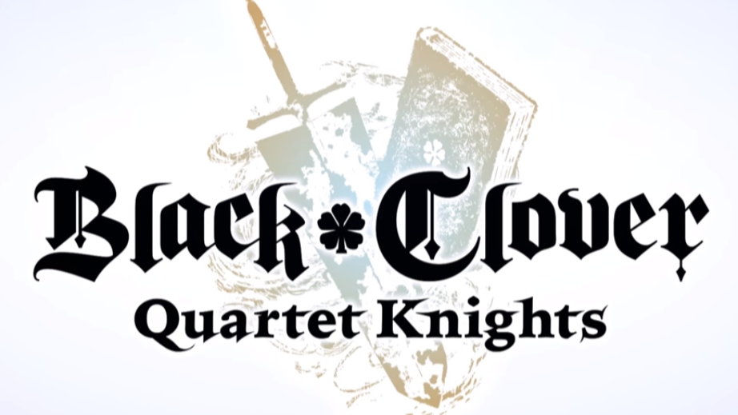
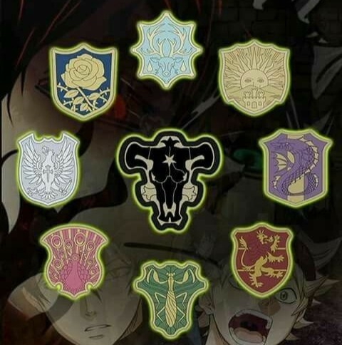

Durante la selección de grimorio, Yuno se destacó por su habilidad y determinación. Su grimorio del trébol de 4 hojas fue elegido como uno de los más poderosos del reino.


Durante la selección de grimorio, Yuno se destacó por su habilidad y determinación. Su grimorio del trébol de 4 hojas fue elegido como uno de los más poderosos del reino.
La historia de Yuno se convirtió en un ejemplo de valentía y habilidad para todos los demás, ya que el trebol de 3 hojas simboliza la fe, esperanza, amor, pero la cuarta hoja representa la buena suerte.
Seguir leyendo...
Los escuadrones del reino son grupos de magos que se especializan en diferentes tipos de magia. Cada escuadrón tiene su propio líder y misión.
Entre los diferentes escuadrones podemos encontrar: Toros Negros, Amanecer Dorado, Leones Carmesí, Aguilas Plateadas, Rosas Azules, Ciervo Aguamarino, Orca Púrpura, Pavo Real Coral y Mantis Verdes
Cada uno de ellos tiene sus propias características y habilidades únicas.
Seguir leyendo...